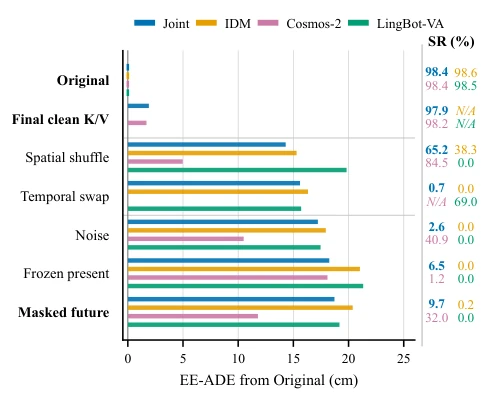
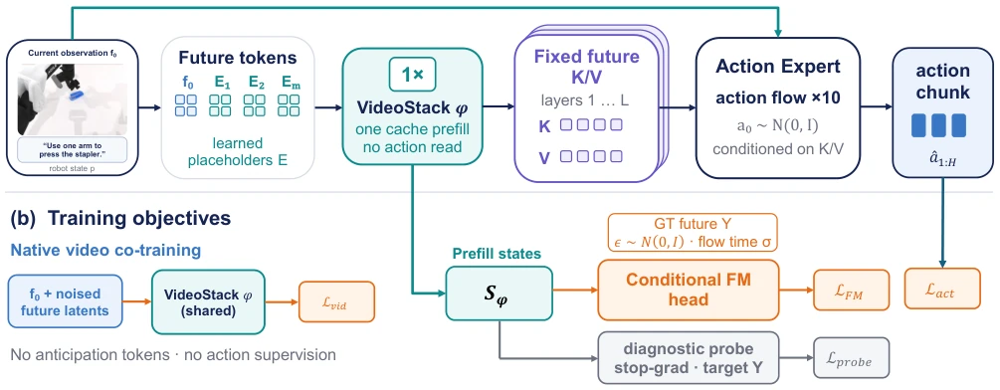
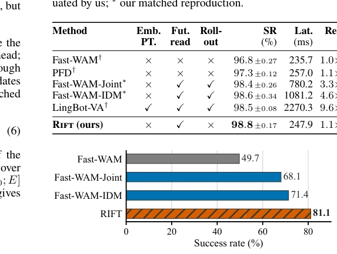
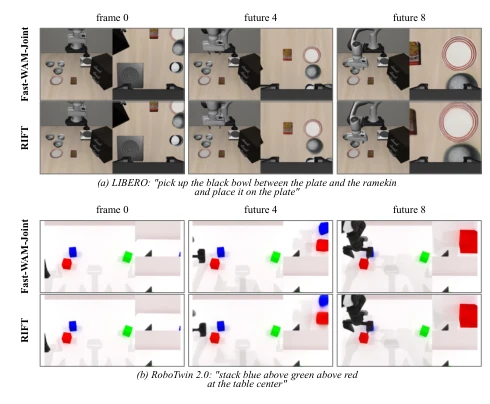
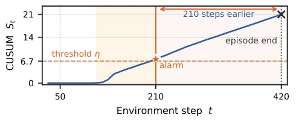
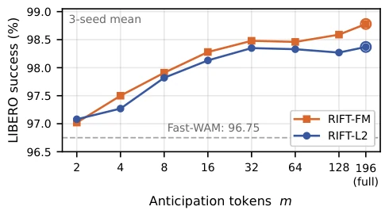
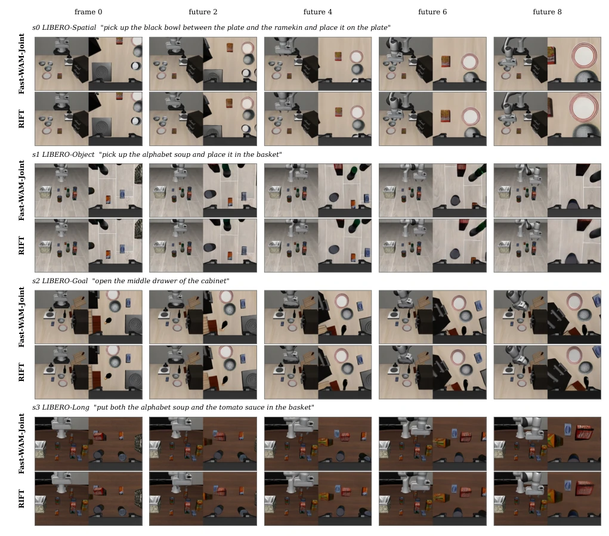
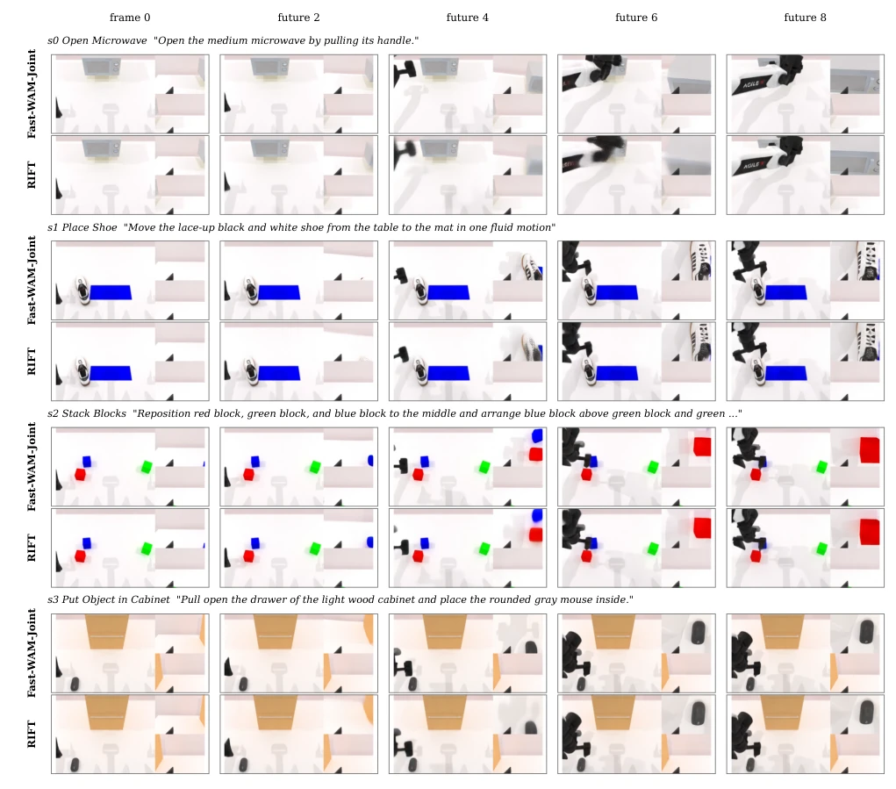

This paper cures the "slowness" of World Action Models (WAM), but does not cure the "high cost". The authors find that robots actually do not need to view every frame of generated video, as long as the future K/V cache is accurate enough. RIFT uses learned anticipation tokens to fill the cache at once, eliminating iterative denoising. In terms of performance, it is similar to Joint, but the speed is increased by nearly 90%. However, this essentially relies on distilling future knowledge; if the future prediction itself is inaccurate, even a fast cache is garbage. Moreover, although intervention experiments proved cache position sensitivity, they did not prove applicability to all models. This "read-only, no-write" strategy is very favorable in simulation, but real-world deployment still depends on generalization.
研究动机Motivation
WAMs 依赖迭代视频 rollout 来生成未来条件，导致部署延迟高（Yuan et al. 2026）。现有高效变体如 Fast-WAM 和 PFD 虽然去掉了未来分支，但性能有差距（Fang, Chen, and Cai 2026）。问题在于：动作专家到底需要演化的轨迹还是最终的未来表征？现有工作混淆了缓存可用性和生成过程。本文通过干预实验证明，固定最终缓存几乎能保留执行效果，从而提出无需 rollout 的构想。这解决了推理延迟与性能保留的矛盾，是 WAM 实用化的关键一步。
WAMs rely on iterative video rollout to generate future conditions, leading to high deployment latency (Yuan et al. 2026). Existing efficient variants such as Fast-WAM and PFD, although removing the future branch, have performance gaps (Fang, Chen, and Cai 2026). The question lies in: does the action expert actually need the evolved trajectory or the final future representation? Existing work confuses cache availability and the generation process. This paper proves through intervention experiments that fixing the final cache can almost retain execution performance, thereby proposing the concept of no rollout. This resolves the contradiction between inference latency and performance retention, which is a key step in WAM practicalization.

Figure 2: Future-cache interventions alter executed tra- jectories and task success. Value-edit rows retain the recorded Original key trajectory and modify only future- position values. Final-clean replay instead substitutes one final-clean K/V cache at every action-denoising step, while masking removes the future read. Bar length gives task- macro EE-ADE in centimeters; the compact block at right gives SR in percent. Each reported intervention result uses 2,000 paired trials over all 40 LIBERO tasks and is paired with the same model’s Original. Original has zero EE-ADE by definition and is marked by colored ticks at the origin. All numbers are direct measurements. Missing bars are not zero: IDM-style models already read one fixed final-clean future K/V cache, while Cosmos-2 exposes only o
Rift architecture retains the Fast-WAM-Joint interface. The core is using learned anticipation tokens to replace rollout future tokens. Training is divided into two paths: one is native video supervision, the other is deployment-matched action training. The action expert reads the pre-filled fixed K/V cache. Conditional Flow Matching is used as the distribution target, rather than direct L2 regression. During deployment, only one cache prefill is needed, no video decoding required. The specific process is: input observation and instruction, prefill K/V via VideoStack, action expert generates action based on this. During training, auxiliary FM head and L2 probe are introduced to ensure cache quality. This method shifts the future generation process from inference time to training time, achieving "one prefill, multiple reuse". Rift retains the original future read interface, but the deployment side becomes a single forward pass. It utilizes Conditional Flow Matching to learn future latent states, avoiding mean bias of direct regression on single observed future. Additionally, through gradient-stopped linear probes, the model can also provide uncertainty warnings during inference. This design is compatible with existing WAM architecture, and completely removes video diffusion and VAE decoding overhead, making deployment latency close to current-only strategy, while retaining future condition advantages.

Figure 3: Rift training and deployment. (a) One VideoStack prefill maps the first-frame latent and anticipation tokens to a fixed per-layer future-position K/V cache, which the action expert reuses throughout denoising. (b) Training pairs native video supervision with a deployment-matched forward for action, conditional-FM, and a stopped-gradient mean-squared probe loss. Action rows use the clean first frame; late perturbation affects only future-supervised rows. At policy-only test time, video co-training, auxiliary heads, and ground-truth futures are removed, leaving the prefill, fixed cache, and action flow.
Tested on LIBERO 40 task and RoboTwin 2.0. Baselines include Joint, IDM, LingBot-VA, Fast-WAM. Metrics are success rate (SR) and latency. Rift reaches 98.8% on LIBERO, close to Joint (98.4%), but latency is only 247.9ms (Joint 780.2ms). In OOD testing, LIBERO-Plus performed best. Ablation shows anticipation tokens count affects performance, FM supervision is better than L2. On RoboTwin 2.0, Rift also achieved the highest success rate. This indicates that no-rollout future conditions are effective on multiple benchmarks, and have stronger generalization.

Figure 4: Overall LIBERO-Plus OOD robustness. Suc- cess across all 10,030 variants, with one rollout per variant and no further training; bars are point estimates.

Figure 6: Matched imagined futures. From matched ini- tial states, Fast-WAM-Joint iterative rollout (top) and Rift one-pass anticipation decodes (bottom) show similar evolu- tion at frames 0, 4, and 8 on LIBERO (upper block) and RoboTwin 2.0 (lower block). Decodes are diagnostic.

Figure 7: L2–FM uncertainty warning over LIBERO. Here η is the CUSUM alarm threshold, conformally cali- brated on all successful tasks; failures are excluded from calibration. Across the 33 failed rollouts, the detector raises an alarm an average of 210 steps before failure.

Figure 5: Anticipation-interface capacity on LIBERO. Mean success over four suites (three seeds) as token count m grows for L2 and conditional-FM supervision. The dashed line is Fast-WAM without anticipation; full alignment (m = 196) gives both recipes their best mean.

Figure 8: Imagined future: Fast-WAM-Joint iterative diffusion versus Rift one pass. Per state, the top strip is Fast- WAM-Joint’s future decoded from its full iterative diffusion rollout; the bottom strip is decoded from Rift’s anticipation tokens after one backbone pass. The first column is the shared current observation at frame 0; the remaining columns show decoded frames 2, 4, 6, and 8. Visual similarity is illustrative; policy behavior is evaluated separately.

Figure 9: RoboTwin 2.0 imagined future: Fast-WAM-Joint iterative diffusion versus Rift one pass. Each row pair starts from the same raw observation from three cameras. The first column is the shared observation at frame 0; the remaining columns show decoded frames 2, 4, 6, and 8. The top strip uses Fast-WAM-Joint’s iterative video diffusion with 20 denoising steps. The bottom strip shows Rift’s anticipation states from one backbone pass, decoded by the trained linear diagnostic probe and frozen VAE. The Rift video decode is diagnostic and is not part of its deployed action path; policy behavior is evaluated separately.